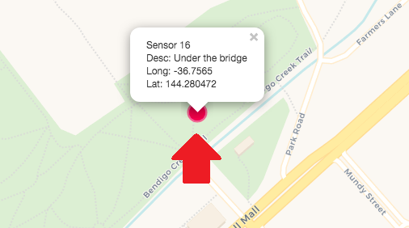
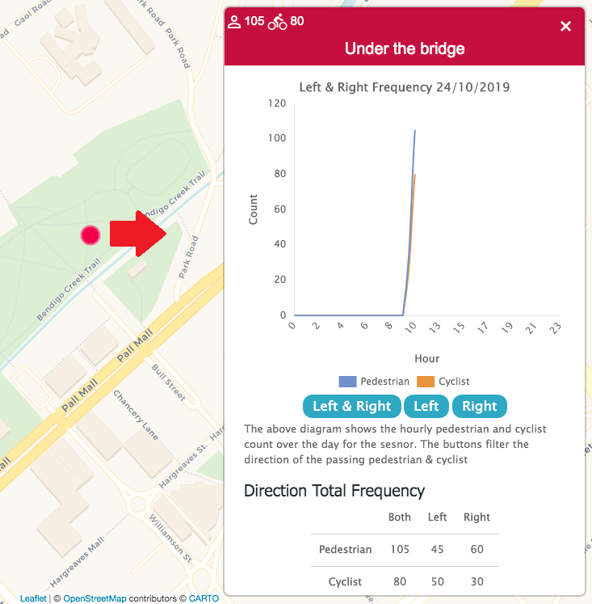
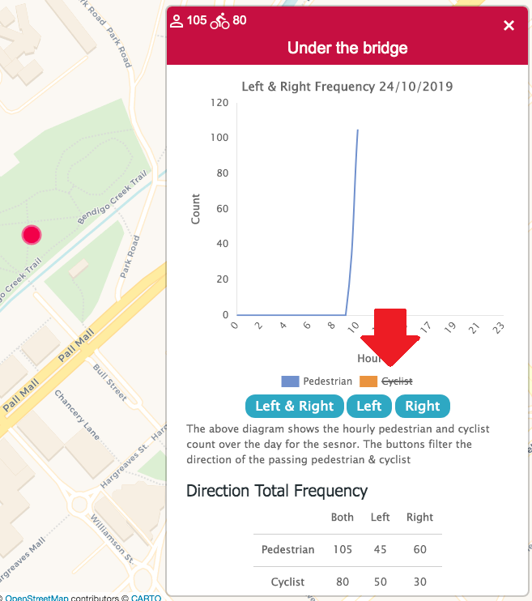
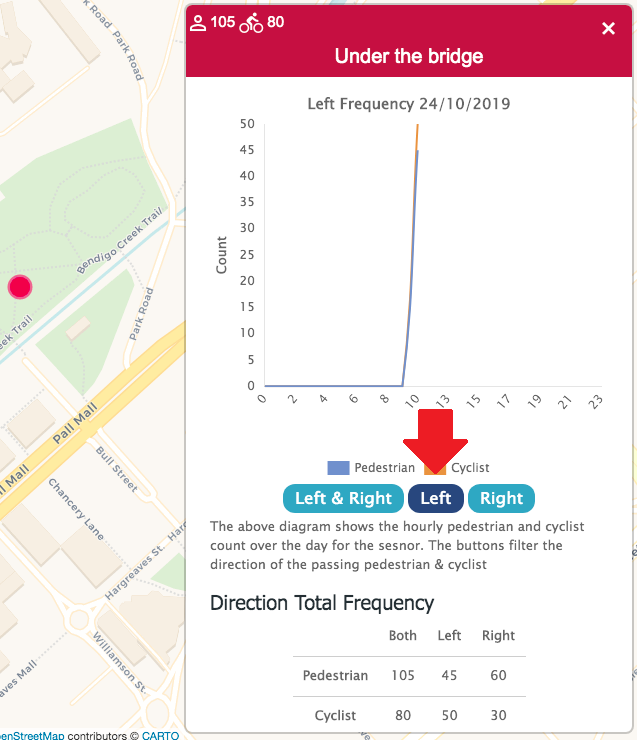
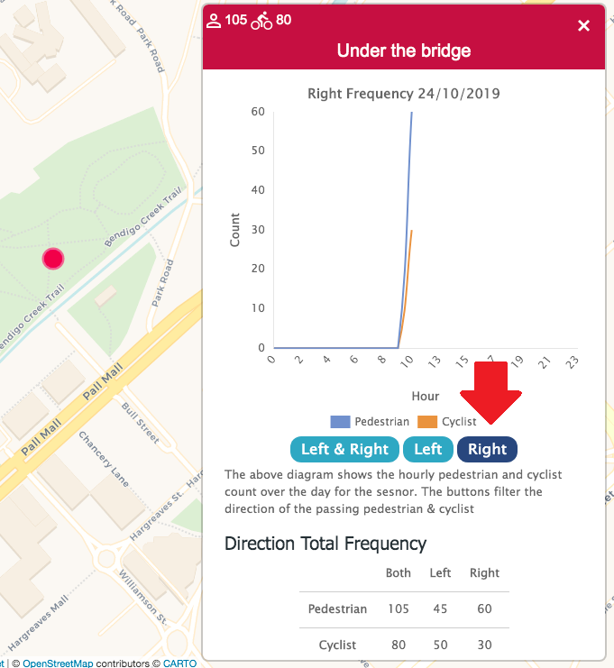
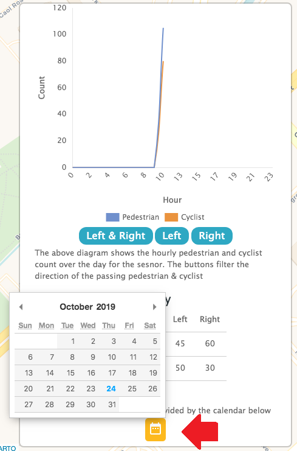

On the pedstrian frequency counter page, pins on the map represent sensors placed along the path on the map.
Click the pins on the map:

A sidebar will popup from the side.
You can change the data on the graph by clicking the 'Pedestrian' button, which will show only only pedestrian data on the graph. You can click the 'Cyclist' button to only show cyclist data. The graph is set to both pedestrian and cyclist data by default.


You can change the data shown on the graphs by pressing the 'Left & Right' button, which shows the data of pedestrians and cyclists travelling in both directions, the 'Left' button to show just pedestrians and cyclists travelling leftward, and the 'Right' button to show just pedestrians and cyclists travelling rightward. The graph is set to show both left and right directions of travel by default.
 You can see the data for any day by clicking on the calender icon and selecting a day: 